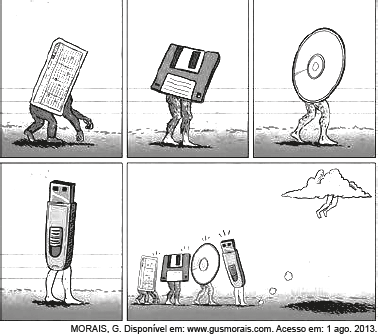

Estatísticas Matemáticas do Formulário
(2017)
Interpretação de Texto - 6 - 30%
Charge - 2 - 10%
Genêro Textual - 3 - 15%
Interpretação Textual - 4 - 20%
Função linguística/ Figura Linguagem - 5 - 25%
(2018)
Interpretação de Texto - 5 - 25%
Charge - 2 - 10%
Genêro Textual - 7 - 35%
Interpretação Textual - 3 - 15%
Função linguística/ Figura Linguagem - 3 - 15%
(2019)
Interpretação de Texto - 2 - 10%
Charge - 1 - 5%
Genêro Textual - 8 - 40%
Interpretação Textual - 3 - 15%
Função linguística/ Figura Linguagem - 6 - 30%
(2020)
Interpretação de Texto - 5 - 25%
Charge - 2 - 10%
Genêro Textual - 1 - 5%
Interpretação Textual - 8 - 40%
Função linguística/ Figura Linguagem - 4 - 20%
(TOTAL)
Interpretação de Texto - 18 - 22,5%
Charge - 7 - 8,75%
Genêro Textual - 19 - 23,75%
Interpretação Textual - 18 - 22,5%
Função linguística/ Figura Linguagem - 18 - 22,5%
Questões ENEM Português
Enem 2018 - Prova Azul - Questão 07
A utilização de determinadas variedades linguísticas em campanhas educativas tem a função de atingir o público-alvo de forma mais direta e eficaz. No caso desse texto, identifica-se essa estratégia pelo(a)
A) discurso formal da língua portuguesa.
B) registro padrão próprio da língua escrita.
C) seleção lexical restrita à esfera da medicina.
D) fidelidade ao jargão da linguagem publicitária.
E) uso de marcas linguísticas típicas da oralidade.
Enem 2017 - Prova Azul - Questão 28
Campanhas publicitárias podem evidenciar problemas sociais. o cartaz tem como finalidade
A) alertar os homens agressores sobre as consequências de seus atos.
B) conscientizar a população sobre a necessidade de denunciar a violência doméstica.
C) instruir as mulheres sobre o que fazer em casos de agressão.
D) despertar nas crianças a capacidade de reconhecer atos de violência doméstica.
E) exigir das autoridades ações preventivas contra a violência doméstica.
Enem 2017 - Prova Azul - Questão 17
Textos e hipertextos: procurando o equilíbrio
Há um medo por parte dos pais e de alguns professores de as crianças desaprenderem quando navegam, medo de elas viciarem, de obterem informação não confiável, de elas se isolarem do mundo real como se o computador fosse um agente do mal, um vilão. Esse medo é reforçado pela mídia, que costuma apresentar o computador como um agente negativo na aprendizagem e na socialização dos usuários Nós sabemos que ninguém corre o risco de desaprender quando navega, seja em ambientes digitais ou em materiais impressos, mas é preciso ver o que se está aprendendo e algumas vezes interferir nesse processo a fim de otimizar ou orientar a aprendizagem,mostrando aos usuários outros temas, outros caminhos, outras possibilidades diferentes daquelas que eles encontraram sozinhos ou daquelas que eles costumam usar. É preciso, algumas vezes, negociar o uso para que ele não seja exclusivo, uma vez que há outros meios de comunicação, outros meios de informação e outras alternativas de lazer. É uma questão de equilibrar e não de culpar.
A autora incentiva o uso da internet pelos estudantes, ponderando sobre a necessidade de orientação a esse uso, pois essa tecnologia
A) está repleta de informação confiável que constituem fonte única para a aprendizagem dos alunos.
B) exige dos pais e professores que proíbam seu uso abusivo para evitar que se torne um vício.
C) tende a se tornar um agente negativo na aprendizagem e na socialização de crianças e jovens.
D) possibilita maior ampliação do conhecimento do mundo quando a aprendizagem é direcionada.
E) leva ao isolamento do mundo real e ao uso exclusivo do computador se a navegação for desmedida.
Enem 2017 - Prova Azul - Segunda Aplicação - Questão 39
Importantes recursos de reflexão e crítica próprios do gênero textual, esses quadrinhos possibilitam pensar sobre o papel da tecnologia nas sociedades contemporâneas, pois
A) indicam a solidão existencial dos usuários das redes sociais virtuais.
B) criticam a superficialidade das relações humanas mantidas pela internet.
C) retratam a dificuldade de adaptação de pessoas mais velhas às relações virtuais.
D) ironizam o crescimento da conexão virtual oposto à falta de vínculos reais entre as pessoas.
E) denunciam o enfraquecimento das relações humanas nos mundos virtual e real contemporâneos.
Enem 2019 - Prova Azul - Primeira Aplicação - Questão 24
Blues da piedade
Vamos pedir piedade
Senhor, piedade
Pra essa gente careta e covarde
Vamos pedir piedade
Senhor, piedade
Lhes dê grandeza e um pouco de coragem
Todo gênero apresenta elementos constitutivos que condicionam seu uso em sociedade. A letra de canção identifica-se com o gênero ladainha, essencialmente, pela utilização da sequência textual
A) expositiva, por discorrer sobre um dado tema.
B) narrativa, por apresentar uma cadeia de ações.
C) injuntiva, por chamar o interlocutor à participação.
D) descritiva, por enumerar características de um personagem.
E) argumentativa, por incitar o leitor a uma tomada de atitude.
Enem 2019 - Prova Azul - Questão 45
Irerê, meu passarinho do sertão do Cariri,
Irerê, meu companheiro,
Cadê viola? Cadê meu bem? Cadê Maria?
Ai triste sorte a do violeiro cantadô!
Ah! Sem a viola em que cantava o seu amô,
Ah! Seu assobio é tua flauta de irerê:
Que tua flauta do sertão quando assobia,
Ah! A gente sofre sem querê!
Ah! Teu canto chega lá no fundo do sertão,
Ah! Como uma brisa amolecendo o coração,
Ah! Ah!
Irerê, solta teu canto!
Canta mais! Canta mais!
Prá alembrá o Cariri!
VILLA-LOBOS, H. Bachianas Brasileiras n. 5 para soprano e oito violoncelos (1938-1945).
Disponível em: http://euterpe.blog.br
Nesses verbos, há uma exaltação ao sertão do Cariri em uma ambientação linguisticamente apoiada no(a)
A) uso recorrente de pronomes.
B) variedade popular da língua portuguesa.
C) referência ao conjunto da fauna nordestina.
D) exploração de instrumentos musicais eruditos.
E) predomínio de regionalismos lexicais nordestinos.
Enem 2019 - Prova Azul - Primeira Aplicação - Questão 44
Toca a sirene na fábrica,
e o apito como um chicote
bate na manhã nascente
e bate na tua cama
no sono da madrugada.
Ternuras da áspera lona
pelo corpo adolescente.
É o trabalho que te chama.
Às pressas tomas o banho,
tomas teu café com pão,
tomas teu lugar no bote
no cais do Capibaribe.
Deixas chorando na esteira
teu filho de mãe solteira.
Levas ao lado a marmita,
contendo a mesma ração
do meio de todo o dia,
a carne-seca e o feijão.
De tudo quanto ele pede
dás só bom-dia ao patrão,
e recomeças a luta
na engrenagem da fiação
MOTA, M. Canto ao meio.
Rio de Janeiro: Civilização Brasileira, 1964.
Nesse texto, a mobilização do uso padrão das formas verbais e pronominais.
A) ajuda a localizar o enredo num ambiente estático.
B) auxilia na caracterização física do personagem principal.
C) acrescenta informações modificadoras às ações dos personagens.
D) alterna os tempos da narrativa, fazendo progredir as ideias do texto.
E) está a serviço do projeto poético, auxiliando na distinção dos referentes.
Enem 2020 - Prova Azul - Primeira Aplicação - Questão 15
O suor para estar em competições nacionais e internacionais de alto nível é o mesmo para homens e mulheres, mas não raramente as remunerações são menores para elas. Se no tênis, um dos esportes mais equânimes em termos de gênero, todos os principais torneios oferecem prêmios idênticos nas disputas femininas e masculinas, no futebol a desigualdade atinge seu ápice. Neymar e Marta são dois expoentes dessa paixão nacional. Ela já foi eleita cinco vezes a melhor jogadora do mundo pela Fifa. Ele conquistou o terceiro lugar na última votação para melhor do mundo. Mas é na conta bancária que a diferença entre os dois se sobressai.
O esporte é uma manifestação cultural na qual se estabelecem relações sociais. Considerando o texto, o futebol é uma modalidade que
A) apresenta proximidades com o tênis, no que tange às relações de gênero entre homens e mulheres.
B) se caracteriza por uma identidade masculina no Brasil, conferindo maior remuneração aos jogadores.
C) traz remunerações, aos jogadores e jogadoras, proporcionais aos seus esforços no treinamento esportivo.
D) resulta em melhor eficiência para as mulheres e, consequentemente, em remuneração mais alta às jogadoras.
E) possui jogadores e jogadoras com a mesma visibilidade, apesar de haver expoentes femininas de destaque, como Marta.
Enem 2020 - Prova Azul - Questão 10
O ouro do século 21
Cério, gadolínio, lutécio, promécio e érbio; sumário, térbio e disprósio; hólmio, túlio e itérbio. Essa lista de nomes esquisitos e pouco conhecidos pode parecer a escalação de um time de futebol, que ainda teria no banco de reservas lantânio, neodímio, praseodímio, európio, escândio e ítrio. Mas esses 17 metais, chamados de terras-raras, fazem parte da vida de quase todos os humanos do planeta. Chamados por muitos de “ouro do século 21”, “elementos do futuro” ou “vitaminas da indústria”, eles estão nos materiais usados na fabricação de lâmpadas, telas de computadores, tablets e celulares, motores de carros elétricos, baterias e até turbinas eólicas. Apesar de tantas aplicações, o Brasil, dono da segunda maior reserva do mundo desses metais, parou de extraí-los e usá-los em 2002. Agora, volta a pensar em retomar sua exploração.
SILVEIRA, E. Disponível em: www.revistaplaneta.com.br.
As aspas sinalizam expressões metafóricas empregadas intencionalmente pelo autor do texto para
A) imprimir um tom irônico à reportagem.
B) incorporar citações de especialistas à reportagem.
C) atribuir maior valor aos metais, objeto da reportagem.
D) esclarecer termos científicos empregados na reportagem.
E) marcar a apropriação de termos de outra ciência pela reportagem.
Enem 2020 - Prova Azul - Questão 40
— O senhor pensa que eu tenho alguma fábrica de dinheiro? (O diretor diz essas coisas a ele, mas olha para todos como quem quer dar uma explicação a todos. Todas as caras sorriem.) Quando seu filho esteve doente, eu o ajudei como pude. Não me peça mais nada. Não me encarregue de pagar as suas contas: já tenho as minhas, e é o que me basta... (Risos.)
O diretor tem o rosto escanhoado, a camisa limpa. A palavra possui um tom educado, de pessoa que convive com gente inteligente, causeuse. O rosto do Dr. Rist resplandece, vermelho e glabro. Um que outro tem os olhos no chão, a atitude discreta.
Naziazeno espera que ele lhe dê as costas, vá reatar a palestra interrompida, aquelas observações sobre a questão social, comunismo e integralismo.
MACHADO, D. Os ratos. São Paulo: Círculo do Livro, s/d
A ficção modernista explorou tipos humanos em situação de conflito social. No fragmento do romancista gaúcho, esse conflito revela a
A) sujeição moral amplificada pela pobreza.
B) crise econômica em expansão nas cidades.
C) falta de diálogo entre patrões e empregados.
D) perspicácia marcada pela formação intelectual.
E) tensão política gerada pelas ideologias vigentes.
Enem 2018 - Prova Azul - Questão 19
A internet proporcionou o surgimento de novos paradigmas sociais e impulsionou a modificação de outros já estabelecidos nas esferas da comunicação e da informação. A principal consequência criticada na tirinha sobre esse processo é a
A) criação de memes
B) ampliação da blogosfera.
C) supremacia das ideias cibernéticas
D) comercialização de pontos de vista.
E) banalização do comércio eletrônico.
Enem 2018 - Prova Azul - Questão 22
A fotografia exibe a fachada de um supermercado em Foz do Iguaçu, cuja localização transfronteiriça é marcada tanto pelo limite com Argentina e Paraguai quanto pela presença de outros povos. Essa fachada revela o(a)
A) apagamento da identidade linguística.
B) planejamento linguístico no espaço urbano.
C) presença marcante da tradição oral na cidade.
D) disputa de comunidades linguísticas diferentes.
E) poluição visual promovida pelo multilinguismo.
Enem 2017 - Prova Azul - Questão 34
Os textos publicitários são produzidos para cumprir determinadas funções comunicativas. Os objetivos desse cartaz estão voltados para a conscientização dos brasileiros sobre a necessidade de
A) as crianças frequentarem a escola regularmente.
B) a formação leitora começar na infância.
C) a alfabetização acontecer na idade certa.
D) a literatura ter o seu mercado consumidor ampliado.
E) as escolas desenvolverem campanhas a favor da leitura.
Enem 2019 - Prova Azul - Questão 33
Inverno! inverno! inverno!
Tristes nevoeiros, frios negrumes da longa treva boreal, descampados de gelo cujo limite escapa-nos sempre, desesperadamente, para lá do horizonte, perpétua solidão inóspita, onde apenas se ouve a voz do vento que passa uivando como uma legião de lobos, através da cidade de catedrais e túmulos de cristal na planície, fantasmas que a miragem povoam e animam, tudo isto: decepções, obscuridade, solidão, desespero e a hora invisível que passa como o vento, tudo isto é o frio inverno da vida.
Há no espírito o luto profundo daquele céu de bruma dos lugares onde a natureza dorme por meses, à espera do sol avaro que não vem.
POMPEIA, R. Canções sem metro. Campinas: Unicamp, 2013
Reconhecido pela linguagem impressionista, Raul Pompeia desenvolveu-a na prosa poética, em que se observa a
A) imprecisão no sentido dos vocábulos.
B) dramaticidade como elemento expressivo.
C) subjetividade em oposição à verossimilhança.
D) valorização da imagem com efeito persuasivo.
E) plasticidade verbal vinculada à cadência melódica.
Enem 2020 - Prova Azul - Questão 25
KOSUTH, J. One and Three Chairs. Museu Reina Sofia, Espanha, 1965. Disponível em: www.museoreinasofia.es. Acesso em: 4 jun. 2018 (adaptado).
A obra de Joseph Kosuth data de 1965 e se constitui por uma fotografia de cadeira, uma cadeira exposta e um quadro com o verbete “Cadeira”. Trata-se de um exemplo de arte conceitual que revela o paradoxo entre verdade e imitação, já que a arte
A) não é a realidade, mas uma representação dela.
B) fundamenta-se na repetição, construindo variações.
C) não se define, pois depende da interpretação do fruidor.
D) resiste ao tempo, beneficiada por múltiplas formas de registro.
E) redesenha a verdade, aproximando-se das definições lexicais.
Enem 2018 PPL - Prova Azul - Questão 07
Em sua conversa com o pai, Calvin busca persuadi-lo, recorrendo à estratégia argumentativa de
A) mostrar que um bom trabalho como pai implica a valorização por parte do filho.
B) apelar para a necessidade que o pai demonstra de ser bem-visto pela família.
C) explorar a preocupação do pai com a própria imagem e popularidade.
D) atribuir seu ponto de vista a terceiros para respaldar suas intenções.
E) gerar um conflito entre a solicitação da mãe e os interesses do pai.
Enem 2019 - Prova Azul - Questão 25
A rede é, antes de tudo, um instrumento de comunicação entre pessoas, um laço virtual em que as comunidades auxiliam seus membros a aprender oque querem saber. Os dados não representam senão amatéria-prima de um processo intelectual e social vivo,altamente elaborado. Enfim, toda inteligência coletivado mundo jamais dispensará a inteligência pessoal, oesforço individual e o tempo necessário para aprender,pesquisar, avaliar e integrar-se a diversas comunidades,sejam elas virtuais ou não. A rede jamais pensará emseu lugar, fique tranquilo.
LÉVY, P. A máquina universo: criação, cognição e cultura
informática. Porto Alegre: Artmed, 1998.
No contexto das novas tecnologias de informação e comunicação, a circulação de saberes depende da
A) otimização do tempo.
B) confiabilidade dos sites.
C) contribuição dos usuários.
D) quantidade de informação.
E) colaboração de intelectuais.
Enem 2020 - Prova Azul - Questão 8
Slam do Corpo é um encontro pensado para surdos e ouvintes, existente desde 2014, em São Paulo. Uma iniciativa pioneira do grupo Corposinalizante, criado em 2008. (Antes de seguirmos, vale a explicação: o termo slam vem do inglês e significa — numa nova acepção para o verbo geralmente utilizado para dizer “bater com força” — a “poesia falada nos ritmos das palavras e da cidade”). Nos saraus, o primeiro objetivo foi o de botar os poemas em Libras na roda, colocar os surdos para circular e entender esse encontro entre a poesia e a língua de sinais, compreender o encontro dessas duas línguas. Poemas de autoria própria, três minutos, um microfone. Sem figurino, nem adereços, nem acompanhamento musical. O que vale é modular a voz e o corpo, um trabalho artesanal de tornar a palavra “visível”, numa arena cujo objetivo maior é o de emocionar a plateia, tirar o público da passividade, seja pelo humor, horror, caos, doçura e outras tantas sensações.
NOVELLI, G. Poesia incorporada. Revista Continente, n. 189, set. 2016 (adaptado).
Na prática artística mencionada no texto, o corpo assume papel de destaque ao articular diferentes linguagens com o intuito de
A) imprimir ritmo e visibilidade à expressão poética.
B) redefinir o espaço de circulação da poesia urbana.
C) estimular produções autorais de usuários de Libras.
D) traduzir expressões verbais para a língua de sinais.
E) proporcionar performances estéticas de pessoas surdas.
Enem 2017 - Prova Azul - Questão 08
Mas assim que penetramos no universo da web, descobrimos que ele constitui não apenas um imenso “território” em expansão acelerada, mas que também oferece inúmeros “mapas”, filtros, seleções para ajudar o navegante a orientar-se. O melhor guia para a web é a própria web. Ainda que seja preciso ter a paciência de explorá-la. Ainda que seja preciso arriscar-se a ficar perdido, aceitar “a perda de tempo” para familiarizar-se com esta terra estranha. Talvez seja preciso ceder por um instante a seu aspecto lúdico para descobrir, no desvio de um link, os sites que mais se aproximam de nossos interesses profissionais ou de nossas paixões e que poderão, portanto, alimentar da melhor maneira possível nossa jornada pessoal.
LÉVY, P. Cibercultura. São Paulo: Editora 34, 1999.
O usuário iniciante sente-se não raramente desorientado no oceano de informações e possibilidades disponíveis na rede mundial de computadores. Nesse sentido, Pierre Lévy, destaca como um dos principais aspectos internet o(a)
A) espaço aberto para a aprendizagem.
B) grande número de ferramentas de pesquisa.
C) ausência de mapas ou guias explicativos.
D) infinito número de páginas virtuais
E) dificuldade de acesso aos sites de pesquisa
Enem 2018 PPL - Prova Azul - Questão 45
Frevo Nino Pernambuquinho
É o frevo
Arrastando a multidão, fervendo.
É na ponta do pé e no calcanhar
É no calcanhar e na ponta do pé com a direita
É na ponta do pé e no calcanhar com a esquerda
Saci-pererê, saci-pererê com a direita
Saci-pererê com a esquerda
Girando, girando, girando no girassol
É o frevo no pé e a sombrinha no ar.
É na ponta do pé e no calcanhar
Pisando em brasa
Pisando em brasa porque o chão está pegando fogo
Na Avenida Guararapes
Arrastando o Galo da Madrugada
Olha a tesoura, para cortar todos os males.
É o frevo no pé e a sombrinha no ar.
DUDA. Perré-bumbá. Recife: Gravadora Independente, 1998 (fragmento).
A letra da canção apresenta o frevo como uma expressão da cultura corporal que pode ser reconhecida por meio da descrição de
A) diversos ritmos.
B) diferentes passos.
C) distintos adereços.
D) vários personagens.
E) uso de instrumentos.
Enem 2020 PPL - Prova Azul - Questão 15

Os quadrinhos apresentam a sequência de certos dispositivos eletrônicos criados no decorrer da história, destacando
A) a alienação provocada pelo uso excessivo da tecnologia nas sociedades urbanas contemporâneas.
B) o estágio mais recente da evolução tecnológica para o armazenamento de dados digitais.
C) os diferentes tipos de dispositivos usados atualmente para a gravação de dados digitais.
D) o desperdício de matéria-prima proveniente da indústria tecnológica.
E) a comparação entre evolução humana e tecnológica.
Enem 2019 - Prova Azul - Questão 28
Os subúrbios do Rio de Janeiro foram a primeira coisa a aparecer no mundo, antes mesmo dos vulcões e dos cachalotes, antes de Portugal invadir, antes do Getúlio Vargas mandar construir casas populares. O bairro do Queím, onde nasci e cresci, é um deles. Aconchegado entre o Engenho Novo e Andaraí, foi feito daquela argila primordial, que se aglutinou em diversos formatos: cães soltos, moscas e morros, uma estação de trem, amendoeiras e barracos e sobrados, botecos e arsenais de guerra, armarinhos e bancas de jogo do bicho e um terreno enorme reservado para o cemitério. Mas tudo ainda estava vazio: faltava gente.
Não demorou. As ruas juntaram tanta poeira que o homem não teve escolha a não ser passar a existir, para varrê-las. À tardinha, sentar na varanda das casas e reclamar da pobreza, falar mal dos outros e olhar para as calçadas encardidas de sol, os ônibus da volta do trabalho sujando tudo de novo.
HERINGER, V. O amor dos homens avulsos. São Paulo: Cia. das Letras, 2016.
Traçando a gênese simbólica de sua cidade, o narrador imprime ao texto um sentido estético fundamentado na
A) excentricidade dos bairros cariocas de sua infância.
B) perspectiva caricata da paisagem de traços deteriorados.
C) importância dos fatos relacionados à história dos subúrbios.
D) diversidade dos tipos humanos identificados porseus hábitos.
E) experiência do cotidiano marcado pelas necessidades e urgências.
Enem 2018 - Prova Azul - Questão 21
Ó Pátria amada,
Idolatrada,
Salve! Salve!
Brasil, de amor eterno seja símbolo
O lábaro que ostentas estrelado,
E diga o verde-louro dessa flâmula
— “Paz no futuro e glória no passado.”
Mas, se ergues da justiça a clava forte,
Verás que um filho teu não foge à luta,
Nem teme, quem te adora, a própria morte.
Terra adorada,
Entre outras mil,
És tu, Brasil,
Ó Pátria amada!
Dos filhos deste solo és mãe gentil,
Pátria amada, Brasil!
Hino Nacional do Brasil. Letra: Joaquim Osório Duque Estrada.
Música: Francisco Manuel da Silva (fragmento).
O uso da norma-padrão na letra do Hino Nacional do Hospital do Brasil é justificado por trata-se de um(a)
A) reverência de um povo a seu país.
B) gênero solene de característica protocolar
C) canção concebida sem interferência da oralidade.
D) escrita de uma fase mais antiga da língua portuguesa
E) artefato cultural respeitado por todo o povo brasileiro.
Enem 2017 PPL - Prova Azul - Questão 21
Na tirinha, o leitor é conduzido a refletir sobre relacionamentos afetivos. A articulação dos recursos verbais e não verbais tem o objetivo de
A) criticar a superficialidade com que as relações amorosas são expostas nas redes sociais.
B) negar antigos conceitos ou experiências afetivas ligadas à vida amorosa dos adolescentes.
C) enfatizar a importância de incoporar novas experiências na vida amorosa dos adolescentes.
D) valorizar as manifestações nas redes sociais como medida do sucesso de uma relação amorosa.
E) associar a popularidade de uma mensagem nas redes sociais à profundidade de uma relação amorosa.
Enem 2019 - Prova Azul - Questão 14
A viagem
Que coisas devo levar
nesta viagem em que partes?
As cartas de navegação só servem
a quem fica.
Com que mapas desvendar
um continente
que falta?
Estrangeira do teu corpo
tão comum
quantas línguas aprender
para calar-me?
Também quem fica
procura
um oriente.
Também
a quem fica
cabe uma paisagem nova
e a travessia insone do desconhecido
e a alegria difícil da descoberta.
O que levas do que fica,
o que, do que levas, retiro?
MARQUES, A. M. In: SANT’ANNA, A. (Org.). Rua Aribau.Porto Alegre: Tag, 2018.
A viagem e a ausência remetem a um repertório poético tradicional. No poema, a voz lírica dialoga com essa tradição, repercutindo a
A) saudade como experiência de apatia.
B) presença da fragmentação da identidade.
C) negação do desejo como expressão de culpa.
D) persistência da memória na valorização do passado.
E) revelação de rumos projetada pela vivência da solidão.
Resolução das Questões